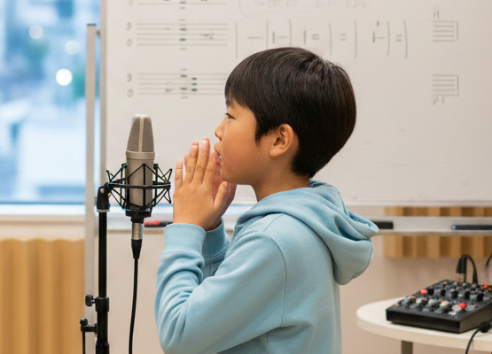
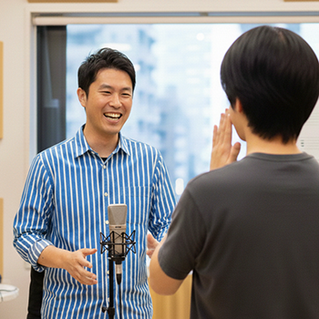
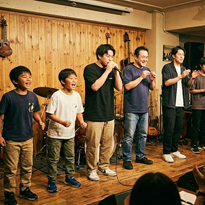

曜日や時間を固定で決めていただく必要はなく、好きな時間、好きなペースで予約を取っていただけます。
月に1～2回ほどが推奨ですが、どれくらいの頻度で通えばよいかわからない方はご相談ください。

プログループ在籍経験のある講師が1対1でしっかり指導。
自分のペースで、習得したい技術を重点的に学べます。

年1度のペースで発表会を開催しております。 ご家族・ご友人も観客として入場可能で、毎回ご好評をいただいております。